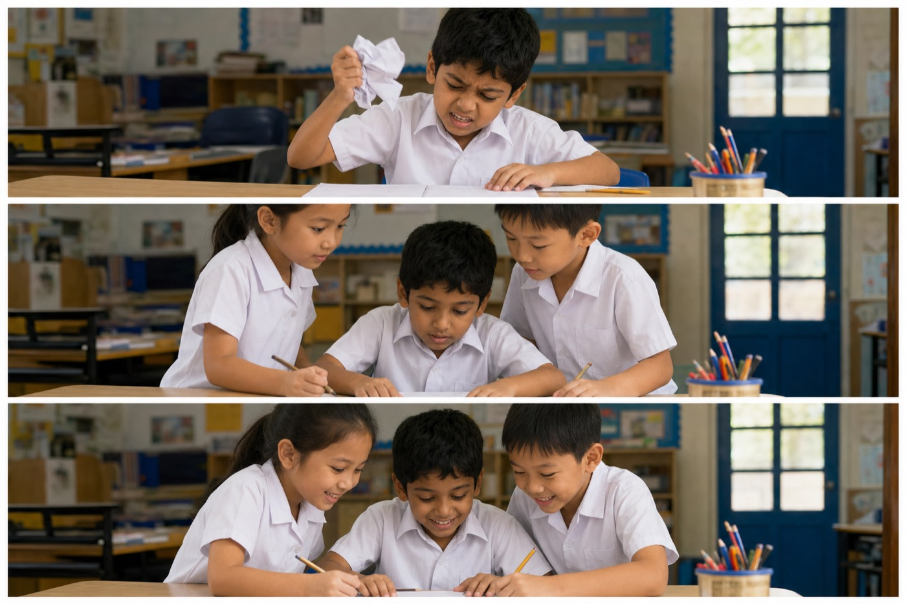
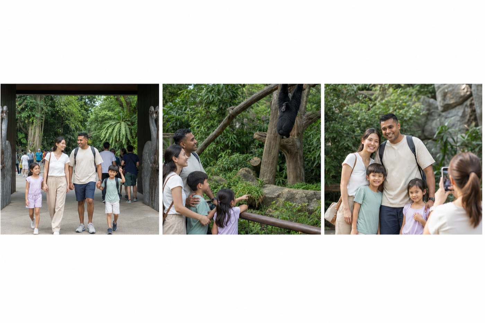
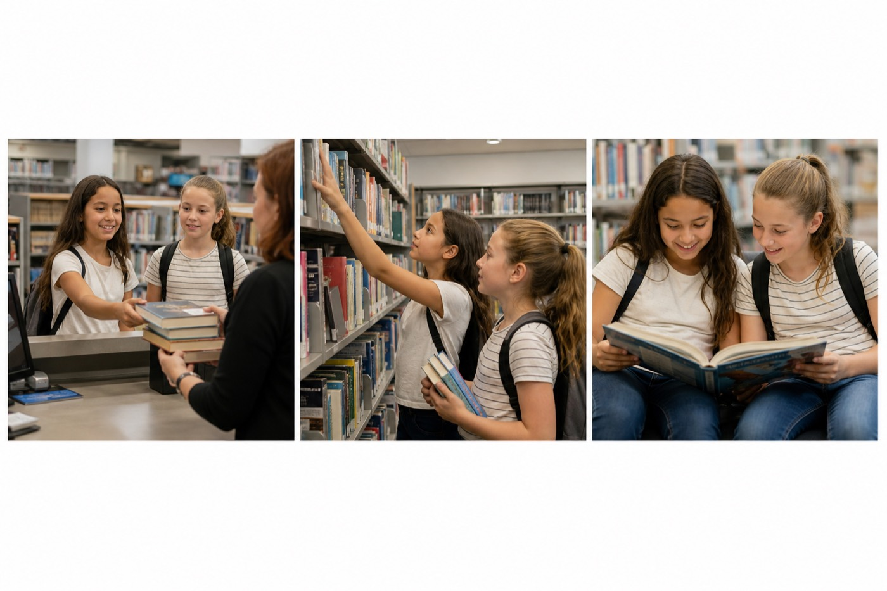
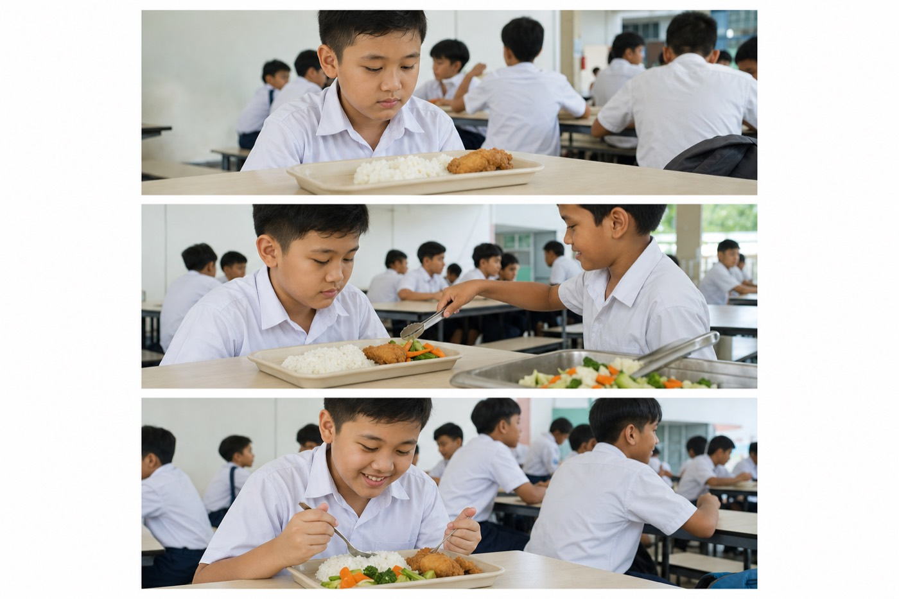
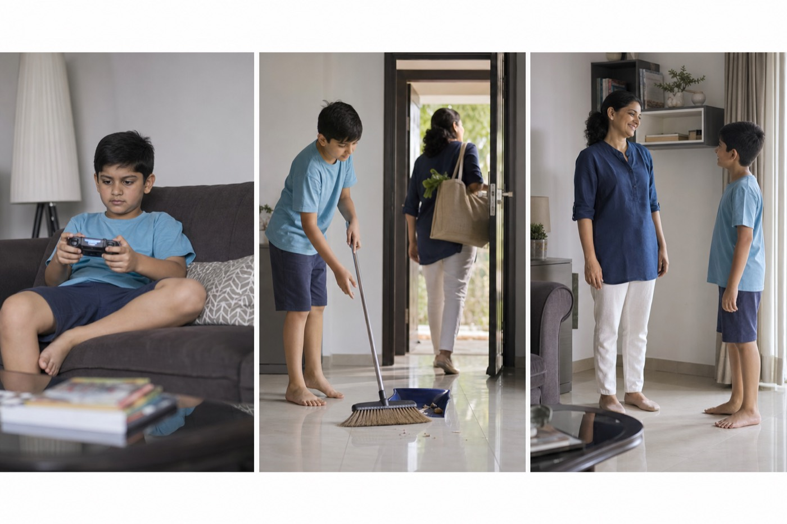

练习 1 · 依据 PSLE 华文口试 2025 Day 1 报道（互相帮助/学习）

- 短片中最引起你注意的是什么？请描述一下。
- 你会跟同学一起互相学习吗？请说一说你的经历。
- 有人说：帮助别人，自己也能学到新知识。你同意吗？为什么？
PEEL answers
Q1: 最引起我注意的是那个男生很烦恼，把纸揉成一团，后来同学来帮助他。一开始他好像想放弃，但同学没有笑话他，而是一起做题。例如他们指着题目慢慢讲解。所以短片讲的是互相帮助和学习。
Q2: 会。有一次我不会做应用题，同学用更简单的方法教我。我听懂以后，后来也帮另一个同学检查作业。互相学习让我更有信心，也更愿意开口问。
Q3: 我同意。因为教别人的时候，自己要把步骤说清楚，等于再复习一次。比如我教弟弟生字时，自己也记得更牢。所以帮助别人也能让自己进步。
Q1: Notices frustrated boy + classmates helping + learning together. · Q2: Personal peer-learning story. · Q3: Agree - teaching others reviews your own learning.
练习 2 · 依据 PSLE 华文口试 2025 Day 2 报道（家庭/旅游/景点）

- 短片里的一家人在做什么？他们的心情怎样？
- 你喜欢和家人一起出去玩吗？请举一个例子。
- 你觉得家庭活动重要吗？为什么？
PEEL answers
Q1: 短片里一家人去动物园玩，一起看动物，最后还拍照。他们看起来很开心，有说有笑。例如孩子指着动物，父母也在旁边微笑。所以这是关于家庭旅游和亲子时间的短片。
Q2: 喜欢。去年我们一家人去过博物馆，我学到新知识，也和父母聊了很多。虽然有时会累，但一起吃饭、走路的时候特别开心。所以我期待更多家庭出游。
Q3: 重要。因为平时大家都很忙，一起活动可以增进感情。比如一起去景点，能留下共同的回忆。没有家庭活动，家人容易缺少交流。
Q1: Family at zoo, happy, photo together. · Q2: Personal family outing example. · Q3: Family activities matter for bonding.
练习 3 · 依据 PSLE 华文口试 2024 Day 1 报道（阅读）

- 短片里的女孩们做了什么？
- 你喜欢阅读吗？你通常读什么书？
- 你觉得阅读对我们有什么好处？
PEEL answers
Q1: 短片里女孩们先还书，再选新书，然后一起阅读和分享。她们看起来很投入，也很开心。例如她们指着书页讨论。所以短片主题是阅读的乐趣。
Q2: 喜欢。我常读故事书，有时也读科普书。上个星期我读了一本冒险故事，觉得很精彩。阅读让我在放学后有安静的休息方式。
Q3: 阅读可以增加词汇，也能帮助我们了解世界。比如读科普书能学到新知识。长期阅读还会让写作和说话更有内容。
Q1: Return books, choose books, read/share. · Q2: Personal reading habits. · Q3: Benefits: vocab, knowledge, imagination.
练习 4 · 依据 PSLE 华文口试 2024 Day 2 报道（健康饮食）

- 短片里发生了什么事？
- 你的饮食习惯健康吗？请说一说。
- 你同意“小朋友也应该吃蔬菜”吗？为什么？
PEEL answers
Q1: 短片里一个男生本来只吃饭和鸡腿，同学看见后夹了蔬菜给他，后来餐盘更均衡。说明同学在关心他的健康。例如蔬菜出现在餐盘上。所以主题是健康饮食。
Q2: 还可以，但还能更好。我每天喝白开水，也尽量吃一点蔬菜。有时想吃炸鸡，妈妈会提醒我不要天天吃。我会继续改进。
Q3: 我同意。蔬菜有维生素，对成长很重要。只吃肉容易不均衡。家长和学校也应该做出好吃的蔬菜，让小朋友更容易接受。
Q1: Unbalanced meal fixed by classmate adding veg. · Q2: Honest habits + improvement. · Q3: Agree children should eat vegetables.
练习 5 · 依据 2025 小六 prelim 高频主题报道（家务）

- 短片里的小朋友做了什么？心情可能有什么变化？
- 你在家会做哪些家务？
- 有人说小孩子不用做家务。你同意吗？为什么？
PEEL answers
Q1: 短片里小朋友先玩游戏，后来帮忙做家务，最后家里变干净了。他的心情可能从舍不得停下，变成做完后很踏实。例如家长微笑，说明也很开心。
Q2: 我会擦桌子、整理书包，有时也帮忙洗碗前把碗收好。上个星期我还扫地。虽然有点累，但觉得自己有用。
Q3: 我不同意。小孩子可以做适合年龄的家务，学习责任感，也能体谅父母。当然不能太危险或太多。做一点家务是应该的。
Q1: Gaming to chores to tidy home; mood improves. · Q2: List real chores. · Q3: Disagree - age-appropriate chores build responsibility.